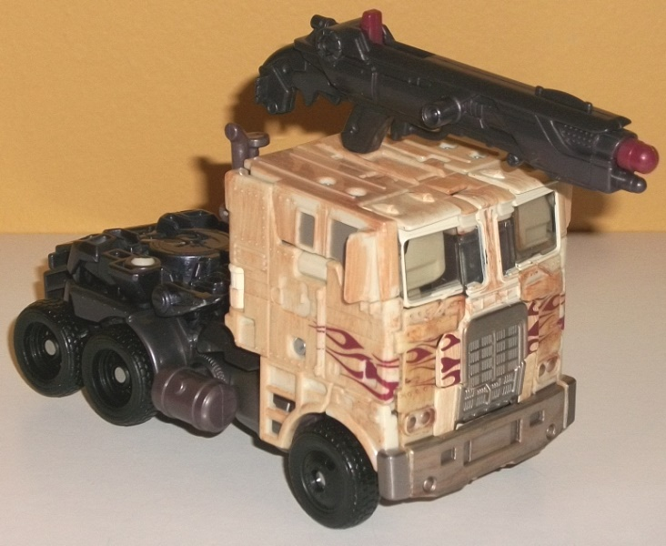
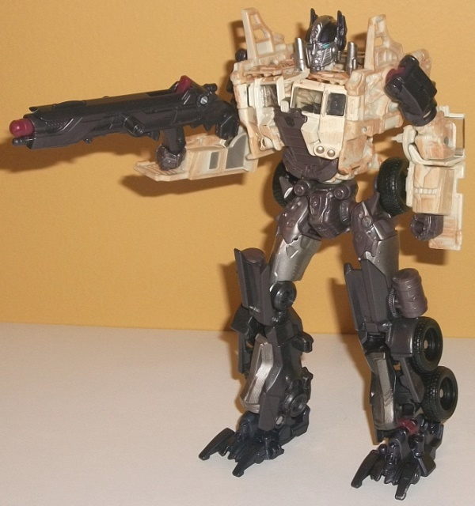
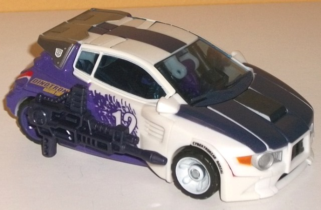
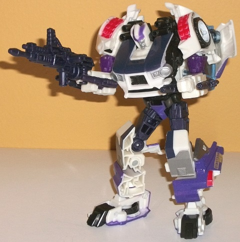
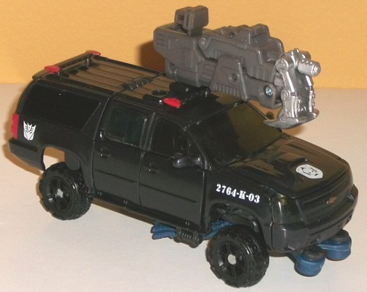
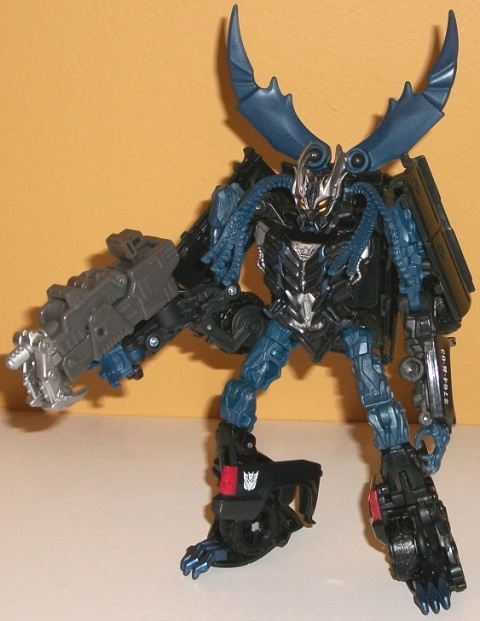

"Breakout
Battle" Platinum Edition 3-pack (AoE) [Online Retailer Exclusive]
"Breakout
Battle" Platinum Edition 3-pack (AoE) [Online Retailer Exclusive]
Set Price
: $100 (U.S.)
(NOTE: Because this set is composed of repaints,
this is not a full-blown review. This mainly covers any changes made to
the set and the color scheme, and merely compares it to the original versions
of these molds. For a review on the mass-release AoE voyager Evasion Mode
Optimus Prime, go
here
. For a review on
Generations Skids-- the mold used for Rollbar-- go
here
.
For a review on DotM Crankcase-- the mold used for Vehicon-- go
here
.)
Optimus
Prime


Allegiance
: Autobot
Size
: Voyager
Difficulty of Transformation
: Hard
Color Scheme
: Light tan, pale brownish
orange, milky gunmetal gray, and some moderately dark silver, moderately
dark milky gray, black, fuchsia, dull rusty red, glossy gray, pale metallic
bronze, silver, and light electric blue
Individual Rating
: 9.9
FINALLY. It took Hasbro
four
releases
of the figure, but they at long
last got Optimus Prime in the colors he actually HAD in the beginning of
the movie! Far from his traditional "red and blue" colors, this Optimus
Prime figure looks dilapidated and worn-out-- as he was at the beginning
of AoE. The truck cab is the perfect shade of a very faded tan, with only
a couple of his trademark flames visible, and dulled at that. The rest
of the tan plastic is paintbrushed with a good amount of darker brownish
orange to simulate rust, and the whole package works very well. Most of
Prime's other colors are various shades of dark gray or charcoal black.
His waist, hips, fists, abs, and side canisters are a milky but fairly
dark gray, while his lower legs, upper arms, and gun are of a rather nice
shade of charcoal black that looks almost metallic (and is in fact metallic
when you get the painted version of this color on such parts as his feet).
There's also some moderately dark silver on the middle of his legs, and
the plastic on his truck windows is a plain clear version (though the side
windows are painted flat gray-- I'll never understand why Hasbro decides
to make some windows clear and some not. I'd prefer all or none). It's
rather impressive that even for such a dull part of his color scheme as
gray and black, Hasbro was still able to make it look rather interesting
by glossying it all up a bit in some rather eye-catching shades. Optimus
also has a very well-detailed face, with silver on the face and sides and
charocal black on the helmet, with some light blue paint on the eyes. He's
also got some faded metallic bronze for his headlights in both modes (on
the real headlights and the faux headlights on his robot chest), which
is an appropriate color for said lights but also complements the surrounding
tan plastic quite well. For just a touch more color, a few minor parts--
such as the missile in Prime's gun and some of the ratchets-- are fuchsia.
It's not really movie-accurate, but it does add just a touch more "pop"
to the color scheme and is close enough a rusty red to complement it, as
well.
No mold changes have
been made to this version of Optimus Prime.
Rollbar


Allegiance
: Autobot
Size
: Deluxe
Difficulty of Transformation
: Medium
Color Scheme
: Off-white, moderately
dark flat purple, charcoal black, and some light red, moderately dark silver,
dark metallic orange, white, transparent pale blue, and moderately dark
royal purple
Individual Rating
: 9.1
"Rollbar" is the name
given to the car Shane drives briefly in the movie, and although it technically
wasn't a Transformer in the movie, it sure was customized enough where
most assumed it was. Thus, it's certainly fitting that it gets a toy that--
wait-- this is a redeco?! Wow, you really can't tell much in vehicle mode.
Yeah, he's a little bit wider than the actual thing and there's some other
small details that are different, but by and large Hasbro did a bang-up
job replicating Shane's car on the Generations Skids mold-- the off-white
base of most of the plastic mixes with the dark flat purple on the back,
with some nice purple "paint splatter" apps on the car doors, along with
some big ol' 12s. It really lets you see all that the
1-step
changer version
is missing-- and that one was a brand new mold! There's
also some charcoal black paint on the front hood and along the middle of
the roof to simulate carbon fiber, some pale light blue plastic for the
windows that looks pretty realistic, and some fake little "sponsor" decals.
There's "Dinotron Racing Fuel", a
rather obscure
homage
over the rear wheels, and "Cybertronian Radial" above the front
tires. All of the necessary details are filled in, too-- the taillights
are light red, the front bumper silver and black, and the headlights a
rather nice dark metallic orange. That said, the white paint used on the
plastic around the windows and on the front tires is noticeably a shade
or two lighter than the off-white plastic used for most of the rest of
the toy. Overall, though, this is a pretty darned awesome replication.
Since the robot mode never appeared in the movie of course, the coloration
there is more of a side effect of the vehicle mode colors, and it's certainly
the least "movie-looking" toy in this group, given that it's a Generations
toy-- even the head is unchanged from Skids'! (Which is rather odd, now
that I think about it-- the 1-step changer had a faceplate, shouldn't they
have used
Crosscut's
head instead?) Because
of all the paint in vehicle mode, the number of robot-specific paint apps
is rather small, limited to just a silver face and purple forehead on the
headsculpt, as well as light red detailing on the shoulder missile packs--
but Rollbar's colors are still certainly broken up enough. Most of Rollbar's
"robot parts" are either charcoal black, a VERY dark purple, or a moderately
dark royal purple. All three of them complement each other well enough,
though I would've gotten rid of some of the very dark purple and replaced
it with the royal purple, given how similar it looks to the charcoal black
plastic.
No mold changes have
been made to Rollbar, though several of his joints are unfortunately noticeably
looser than on Generations Skids and/or Crosscut.
Vehicon


Allegiance
: Decepticon
Size
: Deluxe
Difficulty of Transformation
: Medium
Color Scheme
: Black, dark semi-metallic
blue, charcoal black, and some silver, light red, clear dark tinted plastic,
white, dark metallic pale blue, metallic copper, and orangish "cheesy"
yellow
Individual Rating
: 8.9
In vehicle mode at least,
there's not much to say about Vehicon-- he looks almost exactly the same
as this mold's original usage as Crankcase, which is honestly justified
as the same Chevy Suburban black SUVS were used for the bad guys in AoE
as were used for the Dreads in DotM. The black is SLIGHTLY more impure
on Vehicon, but just barely-- it's only noticeable under good light. And
even then, this only applies to most of the black plastic-- places like
the tires are still cast in your regular-shaded black. The most obvious
difference is that the light bars aren't transparent on this version, but
instead just tipped with light red paint, along with the taillights. The
headlights are still transparent, but they don't have any bronze paint
or the like in the back, making them blend in with the surrounding black
a bit too well, even with two little silver circles in the middle of them.
There's a few new insignias, though, like the Cemetary Wind logo on the
front, identifying Vehicon as another "vehicle that wasn't a TF in the
movie but is as a toy". There's also 2764-K-03 on the sides, which... I
have no idea what that refers to, if anything. The Decepticon symbols are
also near the rear for Vehicon. The Mechtech weapon is now cast mostly
in a dark brownish plastic instead of black, though the front is still
painted silver, and it looks pretty good as your standard gun. Robot mode
is where Vehicon's color scheme really busts out, though. The dark semi-metallic
blue used for Vehicon's shoulder claws, upper legs, claws, and dreads is
just a FANTASTIC shade, and goes extremely well with the black-- certainly
better than DotM Crankcase's blah light milky gray did. More portions of
the arm have also been changed to that charcoal black plastic instead of
light milky gray as well-- I would've preferred that a bit more blue had
been kept on the arms, but it still looks good. The chest and head look
phenomenal, and are the best part of Vehicon's color scheme hands down--
all the silver paint apps look great on the detailing on the chest and
the horns on the face, and there's a bit of dark metallic pale blue detailing
on the chest and middle of the head as well. The yellow used on Vehicon's
eyes also looks downright creepy against the silver head and black plastic,
and is the perfect color to finish accenting the robot mode.
No mold changes have
been made to Vehicon (he has the same "clipped fingers" as later releases
of DotM Crankcase).
The "Breakout Battle"
set is one of the best boxsets of the entire AoE line, if not THE best.
Optimus Prime is finally in not only the color scheme he should have been
in in the first place, but an extremely well-painted version of that color
scheme; Rollbar is about as great of a toy as you can get to look like
Shane's car without it actually being a new mold; and Vehicon, though a
bit dull in vehicle mode, has some dynamite colors in robot mode. This
is on TOP of the fact that all three are strong molds themselves; the only
thing that keeps me from wholeheartedly recommending this set to any AoE
fan is the price. $100 U.S. is steep for toys that would cost someone barely
over half that if they were to have purchased the toys individually. But
if you're in the market for Platinum-priced sets, or if you see it on a
decent discount, DEFINITELY pick up this one.
Breakout Battle Bio:
Hunted by forces that seek to destroy
them, the Autobots have been living off the grid to avoid detection. A
mechanic searching for scrap makes a surprising discovery and brings home
a truck badly in need of repairs. Little does he know, Decepticon enforcers
have tracked the truck to his farm, readying a tactical strike. But Optimus
Prime and the Autobots will never surrender. The Autobot Leader breaks
out of hiding and into battle, unleashing full-blown farmageddon!
Reviews by Beastbot
Back to Transformers:
Age of Extinction Index